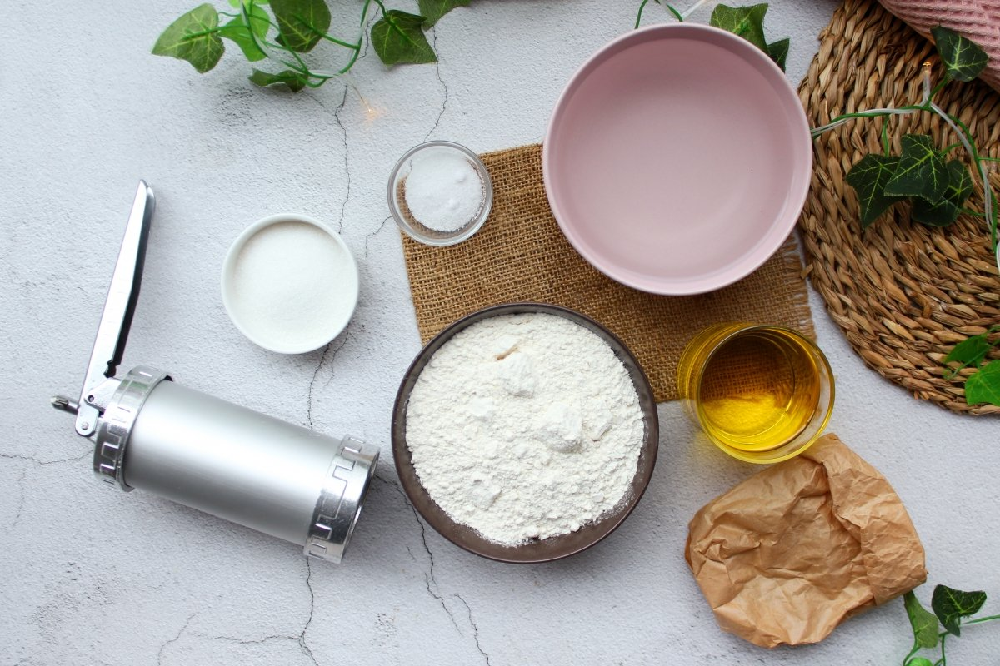
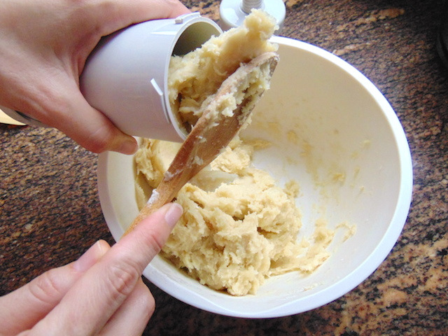
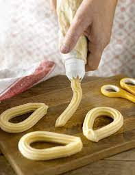
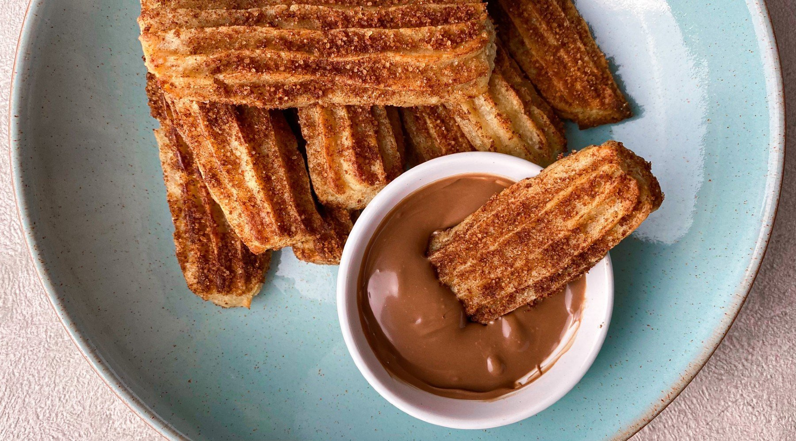
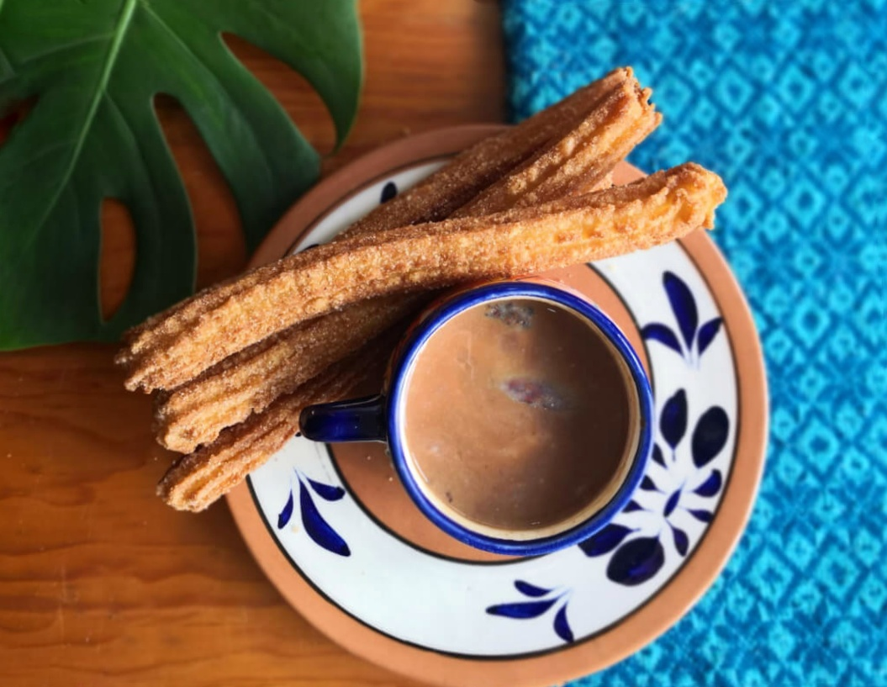
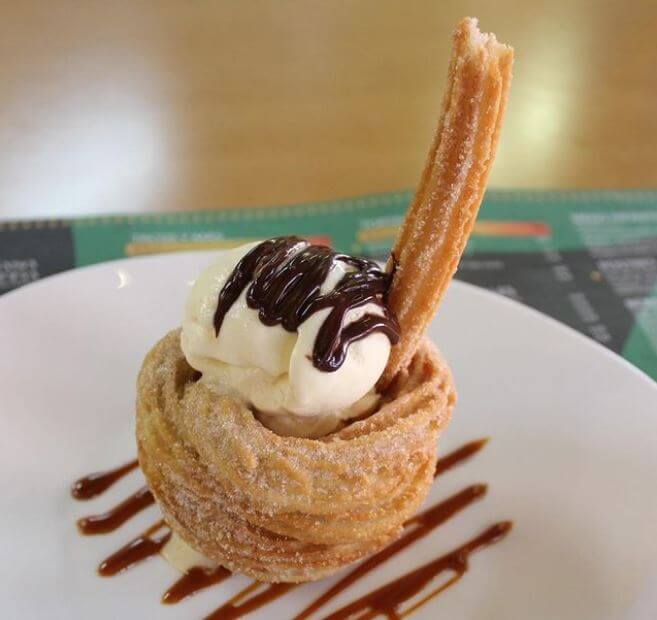
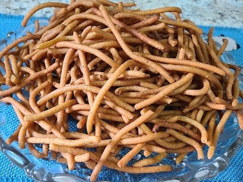

El Arte de los Churros
Los churros, originarios de España, son una delicia crujiente que ha conquistado paladares en todo el mundo. Esta masa frita y azucarada se ha convertido en un postre icónico y versátil.
Ingredientes Mágicos
- 250g de harina de trigo
- 250ml de agua
- 1 cucharadita de sal
- 2 cucharadas de aceite de oliva
- Aceite para freír
- Azúcar y canela para espolvorear


Pasos para la Perfección
- En una cacerola, hierve el agua con la sal y el aceite.
- Agrega la harina de golpe y mezcla vigorosamente hasta formar una masa homogénea.
- Deja enfriar la masa ligeramente.
- Coloca la masa en una manga pastelera con boquilla estrellada.
- Calienta abundante aceite en una sartén profunda.
- Forma los churros directamente sobre el aceite caliente, cortando la masa con tijeras.
- Fríe hasta que estén dorados y crujientes.
- Escurre sobre papel absorbente y espolvorea con azúcar y canela.

Variaciones y Acompañamientos
Los churros son versátiles y pueden disfrutarse de diversas formas:
- Clásico: Con azúcar y canela
- Gourmet: Rellenos de dulce de leche o crema pastelera
- Chocolate: Acompañados de una taza de chocolate caliente espeso
- Helado: Servidos con una bola de helado de vainilla
- Salados: Versión sin azúcar, perfecta para dipear en salsas
Recuerda, la clave está en servirlos calientes y crujientes. ¡Disfruta de esta delicia española en cualquier momento del día!



